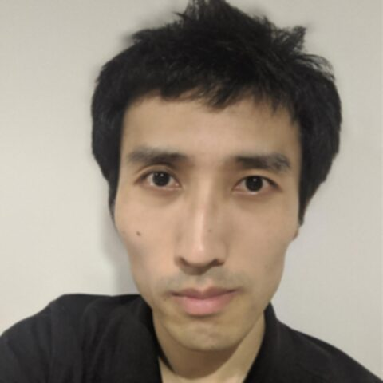

Kozo Nishida
RIKEN BDR, Kobe · Japan
Cytoscape automation and access to pathway databases — KEGGscape, py4cytoscape, pywikipathways, transomics2cytoscape. Bioconductor Community Advisory Board and Carpentries-style Bioconductor workshops in Japanese. HUPO PSI mzTab-M working group — a data standard for sharing quantitative mass spectrometry metabolomics results.
Topics: Metabolomics, Visualisation, FAIR/Standards, Workflows
Codes in: Python, R